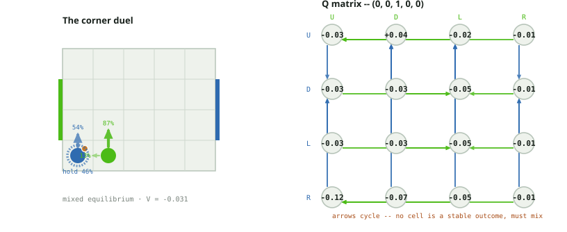
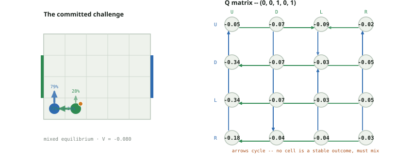
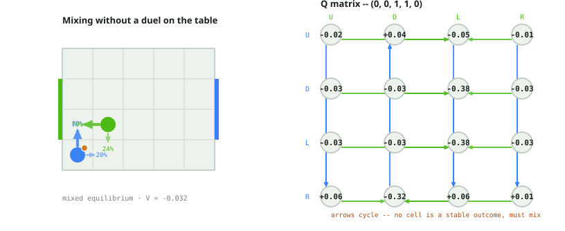
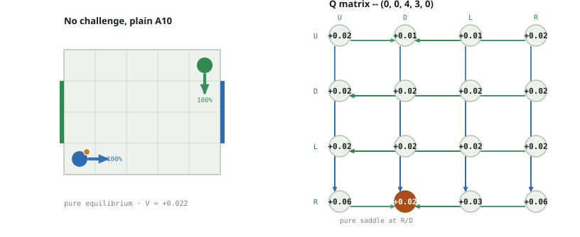
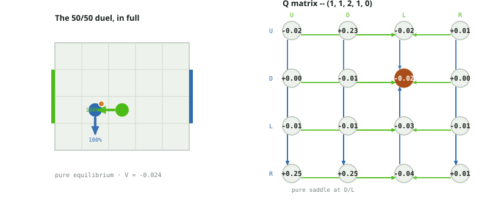
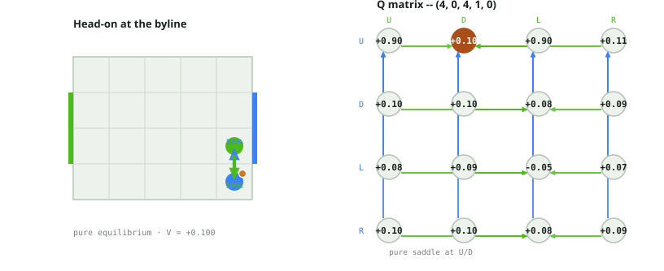
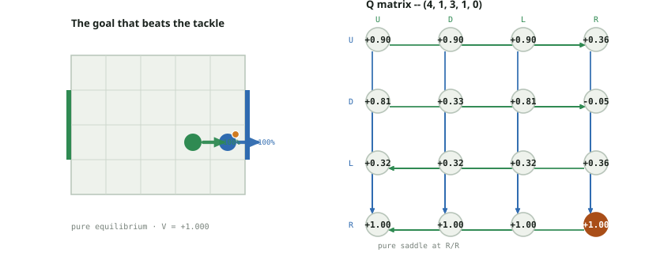

Soccer Markov Nash · tackle board
5 by 4 board; goal rows 1, 2; simultaneous U/D/L/R; this project's own
collision rule, not Littman's and not the A10 rule. A challenge is the
defender's move landing on the carrier's current cell. With no challenge
this turn resolves exactly like the plain deterministic A10 rule. With a
challenge, a duel: probability tackle_prob (0.5 on this board)
the defender wins the ball, shoving the carrier one cell along its own
approach direction (clamped at the wall) and taking the vacated cell;
otherwise the challenge fails, the defender bounces back, and the carrier
keeps the ball, completing its own move only if it was already running
clear of both its own start cell and the defender's.
Why this board has real, fractional probabilities, unlike its A10 twin: 56 of this board's 760 states (about 7.4%) have a genuine mixed equilibrium -- no pure saddle exists. That is the richest source of real randomization among this project's four non-A10 board variants, and a sharp contrast with the A10-deterministic board (a10_cases.html), which has exactly 0 of 2380 -- verified fresh in this same session. The mechanism is the 50/50 duel itself: whenever a challenge is reachable, neither committing to it nor avoiding it is a safe pure answer to a fixed coin the opponent also knows is coming, so both players are pushed into randomizing over it. (The project's other main source of mixed play is a structurally different mechanism -- Littman's random move order on the canonical board, positions.pdf -- where the randomness is in whose move applies first, not in a probabilistic duel.)
Three of the seven cases below are genuinely mixed (cases 1-3); the other four are pure but each puts a different facet of the collision rule on a board diagram: no challenge at all, the duel's two branches in full, a head-on collision that freezes both positions, and a goal that outraces an incoming tackle. These are discounted stationary values with gamma 0.9, the same solver configuration as every other board in this project.
Interactive explorer · Audit and reproduction details
State (0, 0, 1, 0, 0) · player 0 carries the ball · V = -0.031247 · Mixed equilibrium
Security-tied alternatives (not probabilities): P0 U · P1 U
player 0 carries the ball at (0, 0); player 1 defends from directly beside it at (1, 0). Player 1's L is the board's own challenge trigger here -- it targets (0, 0), player 0's current cell -- and it fires a genuine 50/50 duel against *every* one of player 0's four replies (verified below: U,L / D,L / L,L / R,L each split into two weighted branches), because the challenge test only checks where player 0 is standing at the start of the turn, not what player 0 chooses to do about it. Player 1 cannot make L safe by committing to it (a coin the carrier can see coming is no threat) nor make U (hold back) safe either (giving up 13% of the time on the duel loses ground it could contest) -- the exact solve settles player 1 at U 86.9% / L 13.1%. Player 0 answers by mixing U 53.9% / L 46.1%: U is a real advance to (0, 1); L is player 0's own wall-clamped hold in place -- neither is safe on its own against a defender who is themself unpredictable.

| P0 / P1 | U | D | L | R |
|---|---|---|---|---|
| U | -0.033668 | 0.041311 | -0.015241 | -0.007598 |
| D | -0.028417 | -0.028122 | -0.049958 | -0.007062 |
| L | -0.028417 | -0.028122 | -0.049958 | -0.007062 |
| R | -0.115770 | -0.071793 | -0.049958 | -0.011944 |
| P0 / P1 | U | D | L | R |
|---|---|---|---|---|
| U | (0, 1, 1, 1, 0) | (0, 1, 1, 0, 0) | (0, 0, 1, 0, 1) @50% / (0, 1, 1, 0, 0) @50% | (0, 1, 2, 0, 0) |
| D | (0, 0, 1, 1, 0) | (0, 0, 1, 0, 0) | (0, 0, 1, 0, 1) @50% / (0, 0, 1, 0, 0) @50% | (0, 0, 2, 0, 0) |
| L | (0, 0, 1, 1, 0) | (0, 0, 1, 0, 0) | (0, 0, 1, 0, 1) @50% / (0, 0, 1, 0, 0) @50% | (0, 0, 2, 0, 0) |
| R | (1, 0, 1, 1, 0) | (0, 0, 1, 0, 1) | (0, 0, 1, 0, 1) @50% / (0, 0, 1, 0, 0) @50% | (1, 0, 2, 0, 0) |
State (0, 0, 1, 0, 1) · player 1 carries the ball · V = -0.079770 · Mixed equilibrium
Security-tied alternatives (not probabilities): P0 U · P1 U
the mirror of case 1 with the ball on the other foot: player 1 carries at (1, 0), player 0 defends from (0, 0). Player 0's unique challenge action is R, targeting (1, 0) -- and here it fires against every one of player 1's replies (all four R,* cells below split 50/50), because player 1's own move can never get the ball out of range before the duel resolves. Player 0 mixes R 79.1% / U 20.9% -- diving in for the duel most of the time, but not always, since a challenge that always comes is one player 1 can simply shepherd around. Player 1 answers by mixing L 71.8% / U 28.2%, not U/D/R -- L is player 1's own move deepest into open space away from the defender, so it is the best hedge against a duel that might or might not land.

| P0 / P1 | U | D | L | R |
|---|---|---|---|---|
| U | -0.054228 | -0.072738 | -0.089800 | -0.024049 |
| D | -0.340638 | -0.071793 | -0.028122 | -0.051085 |
| L | -0.340638 | -0.071793 | -0.028122 | -0.051085 |
| R | -0.176291 | -0.041869 | -0.041869 | -0.031515 |
| P0 / P1 | U | D | L | R |
|---|---|---|---|---|
| U | (0, 1, 1, 1, 1) | (0, 1, 1, 0, 1) | (0, 1, 0, 0, 1) | (0, 1, 2, 0, 1) |
| D | (0, 0, 1, 1, 1) | (0, 0, 1, 0, 1) | (0, 0, 1, 0, 0) | (0, 0, 2, 0, 1) |
| L | (0, 0, 1, 1, 1) | (0, 0, 1, 0, 1) | (0, 0, 1, 0, 0) | (0, 0, 2, 0, 1) |
| R | (1, 0, 2, 0, 0) @50% / (0, 0, 1, 1, 1) @50% | (1, 0, 2, 0, 0) @50% / (0, 0, 1, 0, 1) @50% | (1, 0, 2, 0, 0) @50% / (0, 0, 1, 0, 1) @50% | (1, 0, 2, 0, 0) @50% / (0, 0, 2, 0, 1) @50% |
State (0, 0, 1, 1, 0) · player 0 carries the ball · V = -0.031575 · Mixed equilibrium
Security-tied alternatives (not probabilities): P0 U · P1 R
player 0 carries at (0, 0); player 1 defends from the diagonal cell (1, 1) -- one step too far for any of U/D/L/R to reach (0, 0) this turn, so (verified below) all 16 joint actions resolve to a single deterministic successor: no challenge, no randomness, this turn looks exactly like a plain A10 stage game. It is still genuinely mixed (minimax - maximin = 0.0595, no pure saddle) -- because several of its own successors, including case 1 and case 2 above, are themselves mixed, and that uncertainty is already baked into V for those states before this turn's Q matrix is even built. Player 0 mixes U 80.0% / R 20.0%; player 1 mixes L 76.3% / D 23.7%. See the note below for exactly which cells feed this.
No challenge is on the table this turn, and it is still mixed: every one of the 16 joint actions above resolves to a single deterministic successor -- the defender at (1, 1) is diagonally adjacent to the carrier at (0, 0), and none of U/D/L/R from there lands on (0, 0), so no duel can fire this turn. The gap between maximin and minimax still does not close, because the solver's values for several of this turn's successor states already price in a duel one move later -- e.g. (0,0,1,0,0) and (0,0,1,0,1), case 1 and case 2 below, are themselves mixed. A state does not need a challenge reachable in the current stage game to inherit real randomization from the continuation value; it only needs to be one move from a state that does.

| P0 / P1 | U | D | L | R |
|---|---|---|---|---|
| U | -0.020590 | 0.041311 | -0.054228 | -0.008641 |
| D | -0.025575 | -0.028122 | -0.378487 | -0.025575 |
| L | -0.025575 | -0.028122 | -0.378487 | -0.025575 |
| R | 0.058917 | -0.322730 | 0.058917 | 0.005242 |
| P0 / P1 | U | D | L | R |
|---|---|---|---|---|
| U | (0, 1, 1, 2, 0) | (0, 1, 1, 0, 0) | (0, 1, 1, 1, 1) | (0, 1, 2, 1, 0) |
| D | (0, 0, 1, 2, 0) | (0, 0, 1, 0, 0) | (0, 0, 0, 1, 0) | (0, 0, 2, 1, 0) |
| L | (0, 0, 1, 2, 0) | (0, 0, 1, 0, 0) | (0, 0, 0, 1, 0) | (0, 0, 2, 1, 0) |
| R | (1, 0, 1, 2, 0) | (1, 0, 1, 1, 1) | (1, 0, 0, 1, 0) | (1, 0, 2, 1, 0) |
State (0, 0, 4, 3, 0) · player 0 carries the ball · V = +0.021644 · Pure equilibrium
Security-tied alternatives (not probabilities): P0 R · P1 D
the two players sit at opposite corners, the maximum Manhattan distance (7) the 5x4 board allows. No defender move can land anywhere close to the carrier's cell, so (verified below) every one of the 16 joint actions is a single deterministic outcome -- this state's stage game is byte-for-byte the plain deterministic A10 rule, exactly as the tackle rule's own docstring promises for a no-challenge turn. It is also a clean, tie-free pure saddle: R is player 0's unique best action (0.021644, beating D/L's 0.019479 and U's 0.007777); D is player 1's unique reply. Nothing here needs the tackle rule at all -- it is the baseline the rest of this document's randomness is measured against.

| P0 / P1 | U | D | L | R |
|---|---|---|---|---|
| U | 0.022554 | 0.007777 | 0.007777 | 0.022554 |
| D | 0.019479 | 0.019479 | 0.022554 | 0.019479 |
| L | 0.019479 | 0.019479 | 0.022554 | 0.019479 |
| R | 0.058917 | 0.021644 | 0.025059 | 0.058917 |
| P0 / P1 | U | D | L | R |
|---|---|---|---|---|
| U | (0, 1, 4, 3, 0) | (0, 1, 4, 2, 0) | (0, 1, 3, 3, 0) | (0, 1, 4, 3, 0) |
| D | (0, 0, 4, 3, 0) | (0, 0, 4, 2, 0) | (0, 0, 3, 3, 0) | (0, 0, 4, 3, 0) |
| L | (0, 0, 4, 3, 0) | (0, 0, 4, 2, 0) | (0, 0, 3, 3, 0) | (0, 0, 4, 3, 0) |
| R | (1, 0, 4, 3, 0) | (1, 0, 4, 2, 0) | (1, 0, 3, 3, 0) | (1, 0, 4, 3, 0) |
State (1, 1, 2, 1, 0) · player 0 carries the ball · V = -0.024493 · Pure equilibrium
Security-tied alternatives (not probabilities): P0 D · P1 L
player 0 carries at (1, 1); player 1 defends from directly beside it at (2, 1). The equilibrium here is pure -- D for player 0 (-0.024493, a unique maximin) against L for player 1 (a unique minimax) -- but (D, L) is itself a live challenge, and both of its branches are worth reading in full: player 1's L targets (1, 1), player 0's current cell, so with probability 0.5 the duel is won by the defender -- the carrier is shoved to (0, 1) along the defender's own leftward approach, the defender takes the vacated (1, 1), and the ball changes hands: (0,1,1,1,1). With probability 0.5 the challenge fails -- the defender bounces back to (2, 1) (unchanged, already there), and the carrier, which was running clear toward (1, 0), keeps going and keeps the ball: (1,0,2,1,0). One state, two branches, a coin between them -- exactly the mechanic that makes 56 states on this board unable to settle on a pure answer, even though this particular one still can.

| P0 / P1 | U | D | L | R |
|---|---|---|---|---|
| U | -0.022044 | 0.226241 | -0.024755 | 0.008641 |
| D | 0.004718 | -0.011944 | -0.024493 | 0.004718 |
| L | -0.008442 | -0.007598 | -0.031434 | -0.007598 |
| R | 0.251379 | 0.251379 | -0.038136 | 0.009601 |
| P0 / P1 | U | D | L | R |
|---|---|---|---|---|
| U | (1, 2, 2, 2, 0) | (1, 2, 2, 0, 0) | (0, 1, 1, 1, 1) @50% / (1, 2, 2, 1, 0) @50% | (1, 2, 3, 1, 0) |
| D | (1, 0, 2, 2, 0) | (1, 0, 2, 0, 0) | (0, 1, 1, 1, 1) @50% / (1, 0, 2, 1, 0) @50% | (1, 0, 3, 1, 0) |
| L | (0, 1, 2, 2, 0) | (0, 1, 2, 0, 0) | (0, 1, 1, 1, 1) @50% / (0, 1, 2, 1, 0) @50% | (0, 1, 3, 1, 0) |
| R | (2, 1, 2, 2, 0) | (2, 1, 2, 0, 0) | (0, 1, 1, 1, 1) @50% / (1, 1, 2, 1, 0) @50% | (2, 1, 3, 1, 0) |
State (4, 0, 4, 1, 0) · player 0 carries the ball · V = +0.099777 · Pure equilibrium
Security-tied alternatives (not probabilities): P0 U · P1 D
player 0 carries at (4, 0), the right byline; player 1 defends from directly above at (4, 1). The equilibrium is U for player 0 against D for player 1, both unique -- and it is a head-on collision: player 1's D targets (4, 0), the challenge condition, for every choice player 0 makes, and player 0's own U targets (4, 1), player 1's current cell, which is not itself a challenge (only the defender's move onto the carrier's cell counts) but does mean the carrier is not 'running clear' if the duel fails. Both branches leave every position exactly where it started -- the win branch's shove is clamped at y = 0 with nowhere to go, and the lose branch holds the carrier up rather than letting it complete U into the defender's own square: (4,0,4,1,1) at 0.5 / (4,0,4,1,0) at 0.5. Nobody moves either way; only the ball's owner is ever in doubt.

| P0 / P1 | U | D | L | R |
|---|---|---|---|---|
| U | 0.900000 | 0.099777 | 0.900000 | 0.109755 |
| D | 0.098779 | 0.099777 | 0.080820 | 0.089800 |
| L | 0.080820 | 0.091246 | -0.045901 | 0.072738 |
| R | 0.098779 | 0.099777 | 0.080820 | 0.089800 |
| P0 / P1 | U | D | L | R |
|---|---|---|---|---|
| U | (4, 1, 4, 2, 0) | (4, 0, 4, 1, 1) @50% / (4, 0, 4, 1, 0) @50% | (4, 1, 3, 1, 0) | (4, 0, 4, 1, 1) |
| D | (4, 0, 4, 2, 0) | (4, 0, 4, 1, 1) @50% / (4, 0, 4, 1, 0) @50% | (4, 0, 3, 1, 0) | (4, 0, 4, 1, 0) |
| L | (3, 0, 4, 2, 0) | (4, 0, 4, 1, 1) @50% / (3, 0, 4, 1, 0) @50% | (3, 0, 3, 1, 0) | (3, 0, 4, 1, 0) |
| R | (4, 0, 4, 2, 0) | (4, 0, 4, 1, 1) @50% / (4, 0, 4, 1, 0) @50% | (4, 0, 3, 1, 0) | (4, 0, 4, 1, 0) |
State (4, 1, 3, 1, 0) · player 0 carries the ball · V = +1.000000 · Pure equilibrium
Security-tied alternatives (not probabilities): P0 R · P1 U/D/L/R
player 0 carries at (4, 1), already on the right goal line in a goal row; player 1 defends from directly beside it at (3, 1). Player 0's R would, off a goal row, just hold in place -- here it scores outright, and it does so unconditionally: R is the unique maximin at exactly 1.0, and every one of player 1's four replies to it ties at the same minimax 1.0, because none of them can stop it. That includes R, player 1's own challenge action, which targets (4, 1) -- player 0's cell -- and would ordinarily force a 50/50 duel. See the note below for exactly why the duel never gets the chance to fire here.
Why the goal beats the tackle, exactly: soccer_nash/game.py's _resolve_tackle checks the carrier's own scoring move before resolving the duel -- if scored: return self._score_result(carrier) -- so a challenge that would otherwise fire never gets the chance. Verified above: player 1's R at (3, 1) targets (4, 1), player 0's current cell, which is a textbook challenge condition, yet every one of player 1's four replies to player 0's R produces the exact same single outcome, GOAL:P0 at probability 1 -- no 50/50 split anywhere in that row. Compare row R to rows U/D/L, where the same defender challenge (col R) does split 50/50, because those rows' own moves do not score outright.

| P0 / P1 | U | D | L | R |
|---|---|---|---|---|
| U | 0.900000 | 0.900000 | 0.900000 | 0.358589 |
| D | 0.810000 | 0.330957 | 0.810000 | -0.051001 |
| L | 0.322730 | 0.322730 | 0.322730 | 0.358589 |
| R | 1.000000 | 1.000000 | 1.000000 | 1.000000 |
| P0 / P1 | U | D | L | R |
|---|---|---|---|---|
| U | (4, 2, 3, 2, 0) | (4, 2, 3, 0, 0) | (4, 2, 2, 1, 0) | (4, 1, 3, 1, 1) @50% / (4, 2, 3, 1, 0) @50% |
| D | (4, 0, 3, 2, 0) | (4, 0, 3, 0, 0) | (4, 0, 2, 1, 0) | (4, 1, 3, 1, 1) @50% / (4, 0, 3, 1, 0) @50% |
| L | (3, 1, 3, 2, 0) | (3, 1, 3, 0, 0) | (3, 1, 2, 1, 0) | (4, 1, 3, 1, 1) @50% / (4, 1, 3, 1, 0) @50% |
| R | GOAL:P0 | GOAL:P0 | GOAL:P0 | GOAL:P0 |